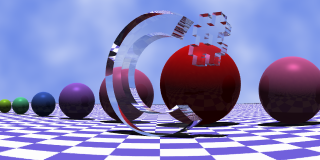
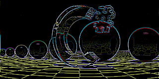
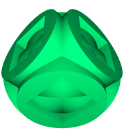

Most of the time, you will use the Image Window to display a rendered image. You can also display, however, images derived from rendered images, such as edge maps and differential maps.
The Edges map command applies a high pass filter to the image in order to detect sharp color transitions in the image. Some of the detected transitions will correspond to borders of the rendered shapes, but other will be related to hard shadows or features from the textures in the scene:
|  |
|  |
This is a useful feature when you're using the adaptive sampler, since this sampler concentrates its efforts in those areas marked as edges in a first draft pass. Please note, however, that the adaptive sampler amplifies the detected edges to start antialiasing from a sensible distance to the edges, in order to avoid some rendering artifacts.
You can save a rendered image in the Image Window that can be used later as a reference:
After saving a reference, you can show it later, at any time, by using the Show reference image menu command, or the corresponding button in the toolbar. The only requirement is that the current image and the reference must have the same dimensions.
The simplest use of this feature is to perform a visual comparison between two related images. They may be, for instance, images rendered from the same scene, but with different parameters. A more accurate comparison can be done by using the Show difference command. This operation creates a new image by subtracting color intensities of the reference image from the original one. The following image sequence represents images rendered with constant ambient, with ambient occlusion and, finally, the difference between the former two:
|  |
The contrast for the rightmost image has been enhanced using the gamma correction display option.
Home | Image Window | Display options | Using the Ray Editor | Editor Window | Motion Blur | Animation Form | Scene Wizard | Noise Generator | XSight RT Options